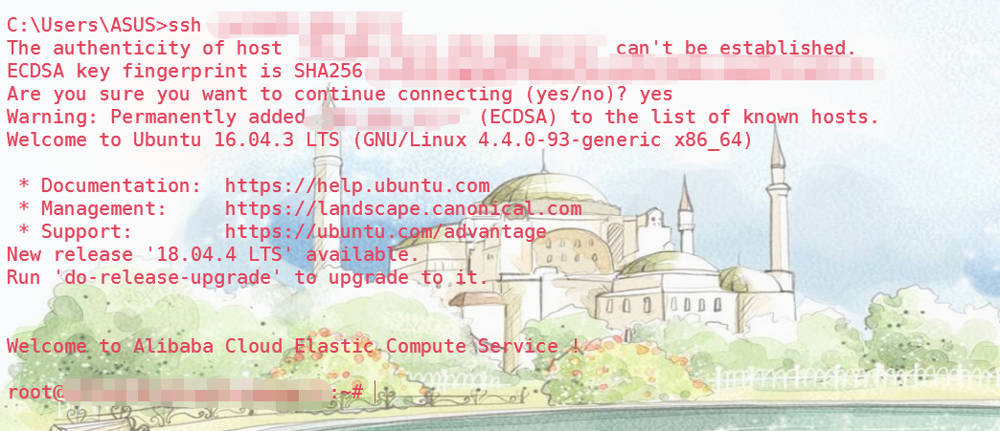
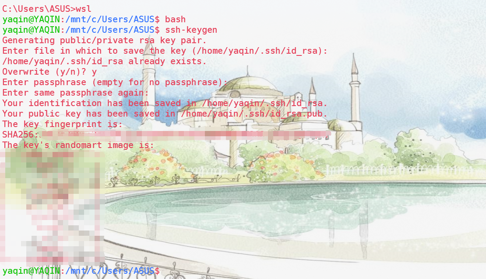
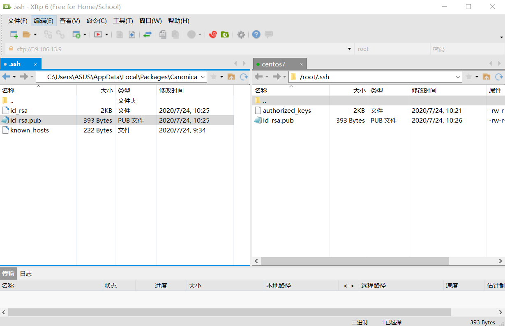
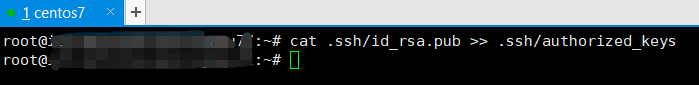
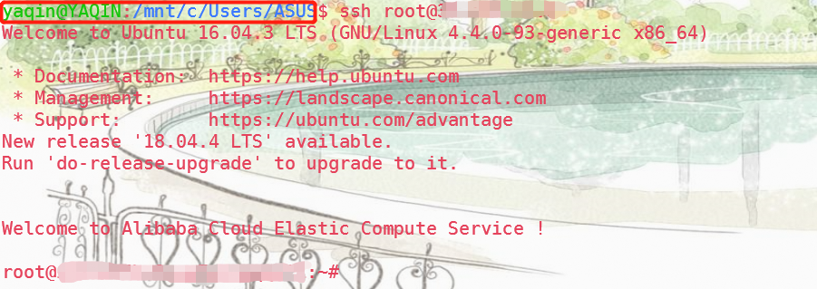

在测试 SSH 是否成功安装时，我发现我无法免密登陆远程服务器，但是在项目命令中确实实现了免密登陆这一功能。虽然已经配置过 XShell 并且使用的十分顺手，但由于项目需要使用 WSL，这意味着如果 WSL 没有设置好远程登陆的话势必会对调试及项目进展造成一定的阻碍，所以毅然决然！配置！
一开始配置错了，配成了本机 Windows 的免密登陆，之后发现其实是密钥的存储路径搞错了，方法是一样的

# 1. 生成公私钥
SSH 的安装这里不进行介绍，我是在安装 openssl 的时候自动给下好了的，所以无法当作参考。这里继续往下走，我们 cmd 打开命令行，输入 wsl ，来到子系统，输入 bash （如果是装在本地则无需这两处）
输入 ssh-keygen 命令，按要求输入存储路径，密码等，我一般都是三个回车也没什么大碍，之后会存在默认路径一个叫.ssh 的文件夹中，在文件夹中应当出现了公私钥 id_rsa

本机默认路径为：C:\Users\ 用户名 \.ssh
WSL 默认路径为：C:\Users\ASUS\AppData\Local\Packages\CanonicalGroupLimited.Ubuntu18.04onWindows_79rhkp1fndgsc\LocalState\rootfs\home\yaqin\.ssh
# 2. 将公钥传给远程服务器
利用 Xftp 将公钥 id_rsa.pub 传给服务器，scp 指令亦可，因为 WSL 的默认路径实在是太长了，为了方便这里使用的是 Xftp 进行传输，来到存储公钥的地方并将文件传给远程服务器的 **.ssh** 文件夹

使用 scp 指令则 scp 路径文件夹 root@IP地址:root/.ssh 即可
# 3. 远程服务器配置
来到远程服务器，使用 cat .shh/id_rsa.pub >> .ssh/authorized_keys 指令重命名公钥文件（如果需要多个用户免密该服务器，则用 vim 在原有 authorized_keys 基础上加用户公钥）

现在就可以用 wsl 免密登陆远程服务器啦！enjoy~

# 4. 小尾巴
在项目中发现学长可以通过服务器名进行进行免密连接，但现在我自己只能做到 IP 地址连接。等我搞清楚其中奥秘，如果可以复刻再来填坑 (现在填完啦！单开了一份文章)